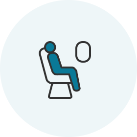

Quy trình làm thủ tục chuyến bay đã được rút ngắn! Hãy chuẩn bị để chuyến bay diễn ra thuận tiện!
Làm thủ tục lên máy bay qua web/di động
Việc này sẽ giúp tiết kiệm thời gian để quý khách có thể thư giãn khi đến sân bay.
Cách sử dụng
| Điều kiện hợp lệ | Hành khách bay trên các chuyến bay của Korean Air có vé điện tử hợp lệ |
|---|---|
| Các tuyến bay đang khai thác | Tất cả các tuyến bay |
| Giờ làm thủ tục chuyến bay |
|
- (ghi chú 1) Các chuyến bay đến/đi Hoa Kỳ, Canada, Vương quốc Anh và Paris : trước 24 giờ ~ 1 giờ
- Các hạn chế về Làm thủ tục lên máy bay qua web/di động
 Hãy đảm bảo quý khách có đủ thời gian để thực hiện việc kiểm tra an ninh và các thủ tục khác (hoàn thành tất cả các thủ tục 1 giờ trước khi khởi hành đối với chuyến bay quốc tế và 20 phút trước khi khởi hành đối với chuyến bay nội địa)
Hãy đảm bảo quý khách có đủ thời gian để thực hiện việc kiểm tra an ninh và các thủ tục khác (hoàn thành tất cả các thủ tục 1 giờ trước khi khởi hành đối với chuyến bay quốc tế và 20 phút trước khi khởi hành đối với chuyến bay nội địa)
Cách làm thủ tục chuyến bay

Các quy trình tại sân bay sau khi làm thủ tục chuyến bay trực tuyến
-

-
01 Làm thủ tục chuyến bay trực tuyến và nhận thẻ lên máy bay
- Chuẩn bị sẵn sàng thẻ lên máy bay (thẻ lên máy bay điện tử hoặc in) và xuất trình tại sân bay vào ngày khởi hành.
-
- 
-
02 Đến sân bay
Đối với hành khách có thẻ lên máy bay
- Khi quý khách không có hành lý ký gửi Mang thẻ lên máy bay và đi thẳng đến phòng đợi lớn mà không dừng lại ở quầy.
-
Khi quý khách có hành lý cần ký gửi
Ký gửi hành lý tại quầy (ghi chú 2) được chỉ định để làm thủ tục chuyến bay trực tuyến và đi tới phòng đợi lớn.
(ghi chú 2) Quý khách có thể ký gửi hành lý nhanh chóng và dễ dàng tại quầy tự ký gửi hành lý (D1~D17, E1~E17) ở sân bay Incheon.
Đối với hành khách có phiếu đổi thẻ lên máy bay
- Lấy thẻ lên máy bay tại quầy được chỉ định để làm thủ tục chuyến bay trực tuyến. Quý khách cũng có thể ký gửi hành lý trong khi lấy thẻ lên máy bay.
-

-
03 Kiểm tra an ninh và xuất nhập cảnh
- Hành khách và đồ tùy thân cá nhân sẽ được bộ phận an ninh kiểm tra để đảm bảo sự an toàn của hành khách và máy bay.
- Mang hộ chiếu và giấy tờ tùy thân (thị thực), theo yêu cầu của quốc gia đi và đến, và tiến đến cửa kiểm tra.
-
- 
-
04 Lên máy bay
- Quý khách phải mang thẻ lên máy bay của mình.